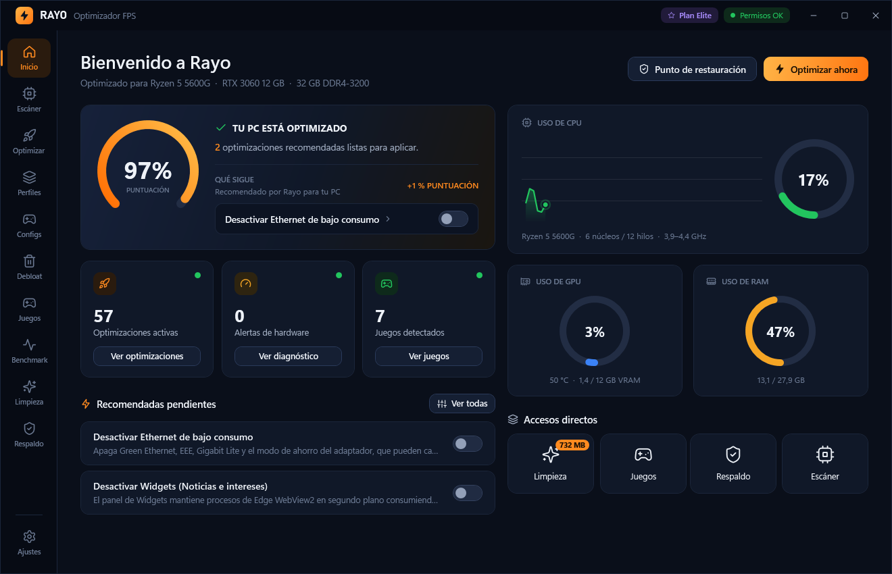

Grátis para começarPagamento único, sem assinaturaTudo pode ser revertido

73otimizações de sistema
34apps para remover
100%reversível com backup
18jogos com Config
Recursos
Tudo o que você precisa para extrair o máximo do seu PC
O scanner detecta o seu hardware real (AMD, Intel, NVIDIA, Radeon, desktop ou notebook) e o Rayo adapta cada recomendação ao seu PC.
Scanner do PC
Detecta CPU, GPU (VRAM real, PCIe, Resizable BAR, driver), RAM (canais, XMP), discos, placa-mãe, monitores (Hz atual e máximo), rede e sistema. Inclui um diagnóstico com botões para corrigir ou ignorar cada aviso, ideias de upgrade de hardware ordenadas por impacto e custo, e um guia de BIOS com o caminho exato em MSI, ASUS, Gigabyte ou ASRock.
Otimizações de sistema
59 ajustes de FPS, latência, GPU, energia, registro, rede, entrada e disco, mais 21 de privacidade e serviços. Cada um indica o seu risco (Seguro / Moderado / Avançado). Perfis prontos: Recomendado, Competitivo, Streaming e Notebook.
Debloat
34 apps pré-instalados para desinstalar com seleção múltipla, 6 ajustes de serviços e 15 de privacidade e telemetria: Copilot, Recall, Widgets, anúncios, Cortana, apps de fabricantes e mais.
Jogos
Detecta jogos da Steam, Epic, Riot, EA, Battle.net, Ubisoft, GOG e Rockstar, e avisa quando você abre um novo. Por jogo: GPU dedicada, prioridade de CPU alta e tela cheia real. Modo Jogo (pausa o Wallpaper Engine), overlay com FPS, 1 % low, temperaturas e ping, e ajustes de arquivo para Fortnite, LoL e Rocket League com prévia e cópia para restaurar. Benchmark com 1 % low, P99, travadas, meta de FPS e importação de CSV.
Limpeza
Temporários, caches de shaders DirectX/NVIDIA, downloads do Windows Update, caches de launchers, dumps, DNS, memória em espera e TRIM. Analisador de disco para ver o que ocupa mais espaço (jogos, downloads, Windows) e, no Pro, compactar o Windows para discos pequenos. Também fecha os apps que gastam RAM antes de jogar (primeiro de forma normal; forçar só se você confirmar), sem tocar em processos do Windows, drivers, antivírus nem nos seus jogos.
Backup e segurança
Ponto de restauração automático, valor original salvo a cada mudança, «Reverter» uma ou todas (avisa se outro programa mudou um valor depois) e modo simulação, que mostra o que faria sem tocar em nada.
Ferramentas
Reparar o Windows (SFC e DISM), reiniciar a rede, reparar o Windows Update e painéis clássicos. DNS mais rápido com teste de latência real e manutenção automática toda semana.
As 59 otimizações por categoria
Mais 15 de privacidade e 6 de serviços no Debloat: 80 no total. O detalhe de cada uma (chave de registro, serviço, ajuste da NVIDIA ou comando exato) está em OPTIMIZACIONES.md (em espanhol).
FPS e Latência 8Modo de Jogo, HAGS, Game Bar, tela cheia, temporizador
GPU 10NVIDIA baixa latência e desempenho máximo, cache de shaders, MSI, VRR, MPO (+ ULPS Radeon)
CPU e Energia 8Desempenho máximo, núcleos sem estacionamento, USB e PCIe sem economia
Registro 11MMCSS, prioridade de primeiro plano, efeitos visuais, menus e desligamento mais rápidos
Rede e Ping 7Nagle, limitação multimídia, Ethernet sem economia, DNS, Teredo/IPv4
Mouse e Teclado 3Sem aceleração, sem Teclas de Aderência, repetição rápida
Memória e Disco 7Kernel na RAM, svchost, TRIM, apps em segundo plano, NTFS sem último acesso
Qualidade de vida 5Extensões visíveis, menu clássico, Finalizar tarefa, Este Computador
Configs por jogo
Otimizado para o seu jogo
Cada Config aplica as otimizações do Windows que servem para aquele tipo de jogo, ajusta o executável (GPU dedicada, prioridade e tela cheia real) e deixa o guia de ajustes dentro do jogo. No Fortnite, League of Legends e Rocket League, o Rayo também muda os ajustes do arquivo do jogo, mostrando antes cada valor atual e o novo. O limite de FPS do Fortnite segue a sua meta do Benchmark. Novos jogos são adicionados sem atualizar o Rayo.
FortniteValorantCounter-Strike 2Call of Duty / WarzoneApex LegendsRainbow Six SiegeOverwatch 2Marvel RivalsPUBGFree Fire (emulador)League of LegendsDota 2MinecraftRobloxGTA VEA Sports FCRocket LeagueThe Finals · novo
Faltou o seu jogo? Peça no canal pedir-juegos do nosso Discord e ele vai aparecer no Rayo na próxima vez que você abrir.
Planos
Comece grátis. Pague uma única vez.
Comece com o plano Grátis e, se quiser mais, compre o Pro ou o Elite com um único pagamento. Reverter mudanças e os pontos de restauração são sempre grátis.
Como comprar? Entre no nosso Discord e clique em «Create ticket» no canal comprar. Você paga por transferência, Mercado Pago ou PayPal e, ao confirmar o pagamento, enviamos a sua chave para você ativar no Rayo → Configurações → Ativar chave. Os preços são em pesos chilenos (CLP) e o atendimento é em espanhol. Reembolso em até 10 dias se o Rayo não funcionar no seu PC (veja os Termos de uso).
Capturas
Assim é o Rayo
Capturas reais do aplicativo (nestas imagens, em espanhol). Toque em uma imagem para ver em tamanho grande.
Backup e segurança
Seu PC sempre pode voltar atrás
O que o Rayo faz por você
Backup a cada mudança: antes de mexer em algo, salva o valor original e, ao reverter, restaura exatamente.
Ponto de restauração automático antes da primeira mudança (no máximo um por dia).
Modo simulação: só registra o que faria, sem tocar em nada.
Risco visível: as avançadas pedem confirmação e ficam fora dos perfis automáticos.
BitLocker: é suspenso durante a reinicialização se você mudar a inicialização, para não pedir a chave.
O que o Rayo NÃO faz
Não desativa o Windows Defender.
Não desativa o Controle de Conta de Usuário (UAC).
Não desativa o Windows Update.
Não remove as mitigações Spectre/Meltdown.
Não aplica «tweaks» que são mitos sem efeito mensurável.
Atenção: desinstalar apps não é revertido automaticamente; eles são reinstalados pela Microsoft Store.
O ZIP traz Rayo.exe (sem instalar), LEEME.txt, TERMINOS.txt e OPTIMIZACIONES.md. O Rayo se atualiza sozinho com um clique.
Baixe e descompacte o ZIP, ou execute o instalador (aceite o aviso de permissões do Windows).
Abra o Rayo e aceite a permissão de administrador. Se recusar, ele funciona em modo somente leitura.
Confira Início e Scanner e clique em «Otimizar agora» para aplicar o perfil Recomendado.
Reinicie quando o Rayo pedir.
O Windows mostra «O Windows protegeu o computador»? É normal: o Rayo ainda não tem assinatura digital. Clique em «Mais informações» e depois em «Executar assim mesmo».
Requisitos
SistemaWindows 10 (1903+) ou 11
Arquitetura64 bits
.NET Framework4.8 (já incluído no Windows)
PermissõesAdministrador (para aplicar)
InternetSó para atualizar (opcional)
GPUNVIDIA recomendada; AMD/Intel funcionam
Idioma do appPortuguês, espanhol ou inglês
Verifique o seu download
O hash SHA-256 de cada arquivo está na página da versão no GitHub. No PowerShell: Get-FileHash RayoSetup.exe
Perguntas frequentes
Antes de instalar
É seguro? Posso desfazer as mudanças?
Sim. O Rayo cria um ponto de restauração, salva o valor original de cada mudança e tem um botão «Reverter» por otimização ou para todas. Você também pode usar o modo simulação para ver o que ele faria antes de aplicar qualquer coisa.
Por que o SmartScreen mostra um aviso?
Porque o programa não tem assinatura digital (a assinatura é paga). Clique em «Mais informações» → «Executar assim mesmo». Você pode conferir que o arquivo é o original com o hash SHA-256 desta página.
Funciona no meu PC?
Sim, em qualquer PC com Windows 10 ou 11 de 64 bits. O scanner detecta o seu hardware real (AMD, Intel, NVIDIA ou Radeon) e as recomendações se adaptam. Tem perfil Notebook e ajuste para Radeon (ULPS).
Posso ser banido por usar o Rayo?
O Rayo não se injeta nos jogos nem mexe nos anti-cheats (Vanguard, Easy Anti-Cheat, BattlEye, Ricochet…): só muda ajustes do Windows e do arquivo de configuração do Fortnite, o mesmo que você faria à mão.
Ele desativa o Windows Defender ou o Windows Update?
Não. Também não desativa o UAC nem as mitigações Spectre/Meltdown. O Rayo evita de propósito esses ajustes e os «tweaks» que são mitos sem efeito mensurável.
Por que pede permissões de administrador?
Para mudar chaves de registro, serviços e energia. Se você não der, o Rayo abre em modo somente leitura e o scanner funciona normalmente.
O app está em português?
Sim. Se o seu Windows está em português, o Rayo já abre em português; você também pode escolher em Configurações → Idioma (português, espanhol ou inglês).
Quanto custa?
O plano Grátis não custa nada. O Pro custa $3.990 CLP e o Elite $6.990 CLP (pesos chilenos), em um único pagamento e com as atualizações incluídas. O plano Grátis serve para testar o Rayo no seu PC. Reverter mudanças é sempre grátis.
Como compro e ativo o meu plano?
Entre no nosso Discord e abra um ticket no canal comprar (atendimento em espanhol). Ao confirmar o pagamento, enviamos a sua chave (começa com RAYO-) e você cola no Rayo → Configurações → Ativar chave. A chave é pessoal e vale para 1 PC seu.
E se não funcionar?
Você tem 10 dias para pedir o reembolso se o Rayo não funcionar no seu PC e o suporte não resolver. Detalhes nos Termos de uso.
Onde vejo o que cada otimização faz?
No OPTIMIZACIONES.md (em espanhol): o catálogo completo com a chave de registro, serviço ou comando exato de cada mudança, o seu risco e se exige reinicialização.